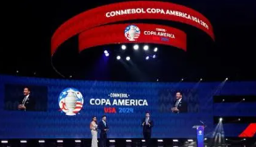
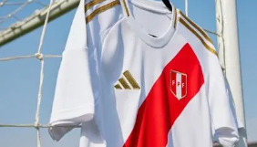

- La Copa América de fútbol es el campeonato de selecciones masculinas nacionales de ese deporte más importante del continente americano y uno de los más antiguos.
- Es organizado por la Confederación Sudamericana de Fútbol. Son 10 selecciones que conforman la Confederación Sudamericana de Fútbol (Conmebol), para participar de la Copa América
,además de ellas también suelen participar dos equipos invitados.
- La CONMEBOL Copa America 2024™ se jugará en Estados Unidos e incluirá a las 10 selecciones de CONMEBOL y seis equipos de Concacaf, en calidad de invitados. Este tradicional torneo será coorganizado por ambas confederaciones.
- Esta será la edición número 48 de una de las competencias más importante del continente, que contará por segunda vez en su historia con 16 participantes, misma cantidad que en la edición del 2016, también realizada en Estados Unidos.
- En el campo estarán reunidos diez títulos sudamericanos de la Copa Mundial de la FIFA™ y las mayores estrellas del fútbol mundial para jugar los 32 partidos de esta edición, en junio y julio del 2024.
* Los Partidos principales se darán de acuerdo a los siguientes horarios:
- Argentina vs Canada 20/06 7:00pm gmt-5
- Perú vs Chile 21/06 7:00pm gmt-5
- Ecuador vs Venezuela 22/06 5:00pm gmt-5
- Mexico vs Jamaica 22/06 8:00pm gmt-5
- USA vs Bolivia 23/06 5:00pm gmt-5
- Uruguay vs Panama 23/06 8:00pm gmt-5
- Colombia vs Paraguay 24/06 5:00pm gmt-5
- Brasil vs Costa Rica 24/06 8:00pm gmt-5
Algunos estadios en los que se jugaran los partidos son:
- Allegiant Stadium, Las Vegas, Nevada
- AT&T Stadium, Arlington, Texas.

- Bank of America Stadium, Charlotte, North Carolina

- Children's Mercy Park, Kansas City, Kansas
- Exploria Stadium, Orlando, Florida
- RPP es la radio oficial de la Copa América 
- Gianluca Lapadula sobre el debut de Gareca en Chile: "Ya nos veremos en la Copa América"
- ¡Jugará contra Perú! Canadá venció 2-0 a Trinidad y Tobago y se clasificó a la Copa América 2024
- RPP y Tai Loy te regalan el pack oficial de Panini Copa América USA 2024
- A detalle: la Selección Peruana la Selección Peruana presentó nuevas camisetas de cara a la Copa América 2024 